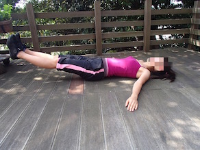
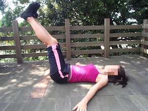

セクシーなくびれをつくる！STEP3
- ① 床に仰向けになり、膝を浮かせて９０度に曲げて、頭の後ろや胸の前に腕を組む。
- ② へそを覗くように、腹筋を意識しながら状態を丸め込む。このとき呼吸は、吐く。
- ③ へそが見えるくらいまでいったら、腹筋を意識した状態で状態をゆっくりおろす。
このとき呼吸は吸う。
- ① 床に仰向けになり、両脚をそろえて床と垂直に上げる。
- ② 手のひらを床に付け固定する。
両脚をそろえて伸ばしたまま、腰がそらないように４カウントでゆっくり下す。
腰を曲げてもいいので素早く戻す。


広告